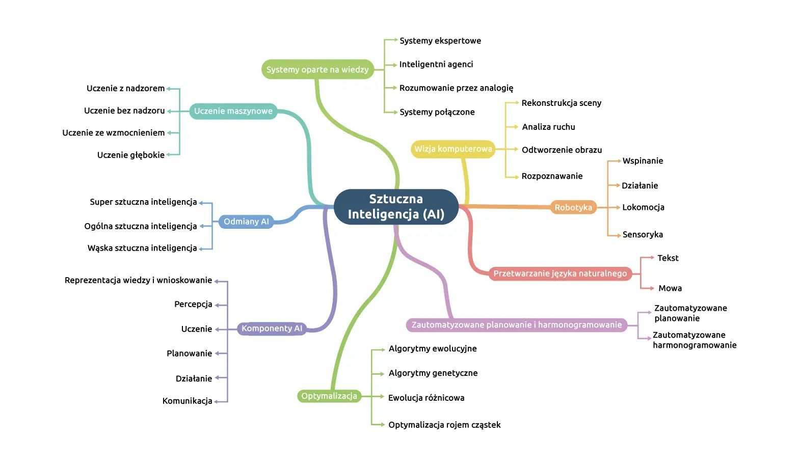
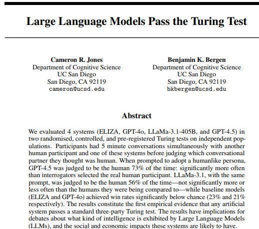

← Strona dzielnicy · Pokaz slajdów
Slajdy do czytania · dzielnica 01
Wprowadzenie. Czym jest sztuczna inteligencja?
Treść slajdów w układzie wygodnym na telefonie. Szersze omówienie jest w konspekcie i w Wiedzy na stronie dzielnicy.
Plan spotkania
- Sprawy organizacyjne: zaliczenie, strona kursu, polityka korzystania z AI
- „Quo vAIdis?” Gdzie jesteśmy?
- Definicje AI: Turing, McCarthy, OECD, art. 3 pkt 1 AI Act
- Podstawowe pojęcia: model, dane, parametry, uczenie maszynowe, głębokie uczenie, NLP, AI generatywna
- ANI, AGI, ASI. Test Turinga i jego krytyki
- Zastosowania AI, także w praktyce prawniczej. Kompetencje w zakresie AI (art. 4 AI Act)
Część I. Sprawy organizacyjne
O wykładzie
- 10 tematów na 9 spotkaniach (15 h), piątki 12:45–14:15, Aula WPiA; 6.11 i 20.11 do 15:00
- Trzy perspektywy:
- technologiczno-historyczna: czym jest AI i jak działa
- społeczno-kulturowa: praca, edukacja, etyka, kultura, środowisko
- prawna: AI Act, ustawa o systemach sztucznej inteligencji, RODO, prawo autorskie, odpowiedzialność, wymiar sprawiedliwości
- Cel: krytyczna ocena wpływu AI na prawo i świadome korzystanie z narzędzi AI w pracy prawnika
Plan spotkań
- Wprowadzenie. Czym jest AI?
- Historia AI
- Jak działa AI? Podstawy dla prawników
- Praca i edukacja
- Etyka, uprzedzenia, przejrzystość
- Regulacja, język, twórczość
- Prawo I: ramy regulacyjne i prawo autorskie
- Prawo II: dane, odpowiedzialność, wymiar sprawiedliwości
- Przyszłość AI: trendy, scenariusze, wdrożenia
- AI a zrównoważony rozwój. Podsumowanie
Zaliczenie: dwie ścieżki do wyboru
A. Test pisemny
- 20 pytań jednokrotnego wyboru (po 1 pkt)
- 2 pytania otwarte (po 5 pkt)
- razem 30 pkt
- pytania otwarte: krótki stan faktyczny i ocena problemu
B. Projekt zaliczeniowy
- aplikacja dla prawników: koncepcja i plan wdrożenia (10–15 stron, schemat, szkic ekranów)
- jedno konkretne zadanie prawnicze, np. weryfikacja sygnatur, przegląd umów
- analiza prawna: AI Act, RODO, tajemnica zawodowa, odpowiedzialność
- pomysł uzgodniony do 6.11.2026
Skala ocen i terminy
| Wynik | Ocena |
|---|---|
| poniżej 60% | 2,0 |
| 60–67% | 3,0 |
| 68–75% | 3,5 |
| 76–83% | 4,0 |
| 84–91% | 4,5 |
| 92–100% | 5,0 |
- Próg zaliczenia: 60% (obie ścieżki)
- Termin: sesja zimowa 5–18 lutego 2027 r., poprawka do 28 lutego 2027 r.
- Nie ma wymogu obecności. Aktywność (dyskusja, zadania z modelami) może podnieść ocenę o pół stopnia; quizy służą do samosprawdzenia
Strona kursu
- Slajdy, konspekty, lektury i ćwiczenia do każdego spotkania
- Quizy do samosprawdzenia (pytania podobne do testowych)
- Aplikacje interaktywne, m.in. raport „Algorytm w Todze” (postawy prawników wobec AI)
- Adres strony: ingardenpl.github.io/ai-wyzwania (link także na kkasprowicz.com)
Polityka korzystania z AI na zajęciach
- Narzędzia AI wolno używać do nauki: streszczeń, pytań kontrolnych, wyjaśniania pojęć
- Projekt: AI dozwolona, ale z oświadczeniem, z jakich narzędzi i w jakim zakresie korzystano
- Za prawdziwość każdego źródła odpowiada autor, nie model
- Nie wklejaj do czatów danych osobowych ani poufnych dokumentów
- Każdy wynik modelu traktuj jak szkic, który trzeba sprawdzić
Część II. „Quo vAIdis?” Gdzie jesteśmy?
Quo vAIdis?
Źródło: okładka książki A. Dragana, Quo vAIdis (Wydawnictwo Otwarte, 2025)
- Dokąd zmierzamy i gdzie jesteśmy?
- Pytanie z tytułu książki fizyka Andrzeja Dragana (2025)
- Dziś: zanim zapytamy o przyszłość, ustalmy, o czym mówimy, gdy mówimy „AI”
Test Turinga dla modeli generatywnych
- Krótki film z gimnastyczką, wygenerowany przez model wideo
- Czy model „rozumie” świat, który pokazuje? Czy zna fizykę ciała, grawitację, ciągłość ruchu?
- Problem „modelu świata”: obraz bywa przekonujący, a ruch fizycznie niemożliwy
Kiedyś ręce i twarze, dziś zegary i szczegóły
Źródło: porównanie wersji Midjourney v1 i v6 [źródło do ustalenia]
Platon, „Fajdros”, czytany głosem AI
Rafael, Szkoła ateńska (1509–1511), domena publiczna
- Mit o Teucie i Tamuzie (Fajdros 274c–275b): pismo da ludziom „pozór mądrości”, a osłabi pamięć
- Fragment czytany licencjonowanym głosem AI Piotra Fronczewskiego (ElevenLabs, 2025)
- Każda nowa technologia wiedzy budziła podobne obawy
Część III. Definicje sztucznej inteligencji
Problemy z definiowaniem
- „Inteligencja” nie ma jednej definicji nawet w psychologii
- „Efekt AI”: to, co maszyna już umie, przestajemy nazywać inteligencją
- Definicje naukowe opisują cel badań, definicja prawna wyznacza zakres obowiązków
- Dla prawnika pytanie brzmi: czy ten konkretny system jest „systemem AI” w rozumieniu przepisów?
Alan Turing (1950): „Czy maszyny mogą myśleć?”
- A. M. Turing, Computing Machinery and Intelligence, „Mind” 59 (1950), nr 236, s. 433–460
- Turing uznał pytanie za zbyt nieostre i zastąpił je grą w naśladownictwo
- Zamiast definiować myślenie, sprawdzamy zachowanie
- Prognoza: około 2000 r. komputery (pamięć ok. 10⁹) będą grać tak dobrze, że przeciętny sędzia po 5 minutach rozmowy trafnie rozpozna maszynę najwyżej w 70% przypadków
John McCarthy: nauka o tworzeniu inteligentnych maszyn
- Wniosek o konferencję w Dartmouth (31.08.1955: McCarthy, Minsky, Rochester, Shannon) wprowadził nazwę artificial intelligence
- Założenie: każdy aspekt uczenia się i inteligencji da się opisać tak dokładnie, że maszyna może go symulować
- McCarthy (2007): AI to „nauka i inżynieria tworzenia inteligentnych maszyn, zwłaszcza inteligentnych programów komputerowych”
Cztery podejścia do AI
| myślenie | działanie | |
|---|---|---|
| jak człowiek | modelowanie poznania | test Turinga |
| racjonalnie | logika, „prawa myśli” | racjonalny agent |
- Podział S. Russella i P. Norviga (Artificial Intelligence: A Modern Approach)
- Współczesna informatyka i prawo wybierają głównie prawą dolną ćwiartkę: agent, który działa, by osiągnąć cel
Definicja OECD (2019, zmieniona w 2023)
- Zalecenie Rady OECD w sprawie sztucznej inteligencji (2019), definicja zaktualizowana 8.11.2023
- System AI: system maszynowy, który dla wyraźnych lub dorozumianych celów wnioskuje z danych wejściowych, jak generować wyniki (predykcje, treści, zalecenia, decyzje) mogące wpływać na środowisko fizyczne lub wirtualne
- Systemy różnią się poziomem autonomii i zdolnością adaptacji po wdrożeniu
- Na tej definicji oparto definicję w AI Act
Art. 3 pkt 1 AI Act
„system AI” oznacza system maszynowy, który został zaprojektowany do działania z różnym poziomem autonomii po jego wdrożeniu oraz który może wykazywać zdolność adaptacji po jego wdrożeniu, a także który – na potrzeby wyraźnych lub dorozumianych celów – wnioskuje, jak generować na podstawie otrzymanych danych wejściowych wyniki, takie jak predykcje, treści, zalecenia lub decyzje, które mogą wpływać na środowisko fizyczne lub wirtualne
Rozporządzenie (UE) 2024/1689, art. 3 pkt 1
Siedem elementów definicji
- system maszynowy
- zaprojektowany do działania z różnym poziomem autonomii
- może wykazywać zdolność adaptacji po wdrożeniu
- działa na potrzeby wyraźnych lub dorozumianych celów
- wnioskuje na podstawie danych wejściowych
- jak generować wyniki: predykcje, treści, zalecenia, decyzje
- wyniki mogą wpływać na środowisko fizyczne lub wirtualne
Za: Wytyczne Komisji w sprawie definicji systemu AI, C(2025) 5053 final (ogłoszone 6.02.2025), pkt 9
Uproszczenia, na które trzeba uważać
- „Autonomia” nie znaczy „bez nadzoru człowieka”, tylko pewną niezależność działania od człowieka
- Zdolność adaptacji (uczenie się po wdrożeniu) jest możliwa, ale nie konieczna
- Decydujące jest wnioskowanie, a nie sam fakt, że program „liczy”
Czego definicja nie obejmuje?
- Motyw 12: definicja nie obejmuje prostego tradycyjnego oprogramowania ani systemów działających wyłącznie według reguł zdefiniowanych przez człowieka
- Wytyczne Komisji wymieniają m.in.:
- systemy usprawniające optymalizację matematyczną
- podstawowe przetwarzanie danych (sortowanie i filtrowanie baz, standardowe arkusze kalkulacyjne)
- systemy oparte na klasycznych heurystykach (np. program szachowy z algorytmem minimax)
- proste systemy predykcyjne (np. prognoza jako średnia z poprzednich okresów)
- Wytyczne nie są wiążące: wiążącą wykładnię da TSUE
Ćwiczenie: czy to system AI?
- Arkusz kalkulacyjny liczący odsetki ustawowe według wzoru
- Filtr antyspamowy uczony na oznaczonych wiadomościach
- Model scoringowy banku trenowany na historii kredytów
- Wyszukiwarka orzeczeń według słów kluczowych i dat
- Czat odpowiadający na pytania o stan prawny
- Program, który według tabeli z rozporządzenia nalicza opłatę sądową
Część IV. Podstawowe pojęcia
Mapa dziedzin AI

Źródło: Nawigator technologiczny „Sztuczna inteligencja”, Fundacja Platforma Przemysłu Przyszłości (zlikwidowana 31.12.2024; zadania przejęła PARP)
Od ogółu do szczegółu
- Sztuczna inteligencja: cała dziedzina, także systemy oparte na regułach i wiedzy
- Uczenie maszynowe: systemy, które uczą się wzorców z danych zamiast wykonywać zapisane reguły
- Głębokie uczenie: uczenie maszynowe za pomocą wielowarstwowych sieci neuronowych
- AI generatywna: modele, które tworzą nowe treści: tekst, obraz, dźwięk, wideo
Model, dane treningowe, parametry
- Model: matematyczna funkcja, która przekształca dane wejściowe w wynik
- Dane treningowe: przykłady, na których model „uczy się” wzorców (teksty, obrazy, decyzje)
- Parametry: liczby (wagi) ustawiane w trakcie uczenia; duże modele językowe mają ich miliardy
- Trenowanie a wnioskowanie (inference): najpierw uczymy model, potem go używamy
Uczenie maszynowe
- Program nie dostaje reguł, tylko przykłady i sposób oceny błędu
- Trzy główne rodzaje: nadzorowane, nienadzorowane, ze wzmocnieniem (szczegóły: spotkanie 3)
- Przykład prawniczy: model uczony na tysiącach umów oznacza klauzule ryzykowne
- Konsekwencja: jakość wyniku zależy od jakości i reprezentatywności danych
Głębokie uczenie
- Sieci neuronowe z wieloma warstwami, które same wydobywają cechy z surowych danych
- Przełom po 2012 r.: rozpoznawanie obrazów i mowy, tłumaczenie maszynowe
- Klasyczny przegląd: Y. LeCun, Y. Bengio, G. Hinton, Deep learning, „Nature” 521 (2015), s. 436–444
- Cena: ogromne zbiory danych, duża moc obliczeniowa, trudna wyjaśnialność („czarna skrzynka”)
Przetwarzanie języka naturalnego (NLP)
- Rozpoznawanie, analiza i tworzenie tekstu oraz mowy w języku ludzkim
- Przykłady: tłumaczenie, streszczanie, wyszukiwanie semantyczne, transkrypcja nagrań, klasyfikacja pism
- Duże modele językowe (LLM) to dziś główne narzędzie NLP
- Dla prawa szczególnie ważne, bo prawo jest tekstem
AI generatywna
- Modele tworzące nowe treści na podstawie poleceń (promptów)
- Tekst (ChatGPT, Claude, Gemini, Bielik), obraz (Midjourney), dźwięk (ElevenLabs), wideo (Sora, Veo)
- Wynik jest prawdopodobny, a nie z definicji prawdziwy
- Prawo reaguje: oznaczanie treści syntetycznych (art. 50 AI Act), spory o prawa autorskie (spotkanie 7)
Część V. ANI, AGI, ASI i test Turinga
ANI, AGI, ASI
- ANI (narrow, wąska): sprawna w określonym zadaniu lub grupie zadań. To wszystkie dzisiejsze systemy
- AGI (general, ogólna): dorównuje człowiekowi w większości zadań poznawczych
- ASI (super): według N. Bostroma intelekt, który znacznie przewyższa ludzi niemal we wszystkich dziedzinach
N. Bostrom, Superinteligencja, Helion 2016
Test Turinga: gra w naśladownictwo
- Sędzia prowadzi rozmowę tekstową z dwoma rozmówcami, których nie widzi
- Jeśli nie potrafi rozpoznać, który jest maszyną, maszyna „zdaje” test
Krytyka 1: Chiński pokój (J. Searle, 1980)
- Człowiek w zamkniętym pokoju układa chińskie znaki według instrukcji i odpowiada poprawnie, choć nie zna chińskiego
- Z zewnątrz wygląda to na rozumienie
- Wniosek Searle’a: manipulacja symbolami (składnia) nie daje rozumienia (semantyki)
- J. R. Searle, Minds, Brains, and Programs, „Behavioral and Brain Sciences” 3 (1980), nr 3
Krytyka 2: efekt ELIZY
- ELIZA (J. Weizenbaum, MIT, 1966): prosty program udający psychoterapeutę
- Użytkownicy przypisywali mu zrozumienie i empatię
- Wniosek: ludzie łatwo antropomorfizują maszyny, więc test oparty na ludzkim osądzie jest łatwy do „oszukania”
- Antropomorfizację dużych modeli omawiamy na spotkaniu 3
Czy LLM zdały test Turinga?

C. R. Jones, B. K. Bergen, arXiv:2503.23674 (2025)
- Trójstronny test: sędzia rozmawia jednocześnie z człowiekiem i z AI
- GPT-4.5 z instrukcją przyjęcia „ludzkiej persony”: uznany za człowieka w 73% rozmów
- LLaMa-3.1-405B: 56%
- ELIZA: 23%, GPT-4o: 21%
- Rok wcześniej (2024, test dwustronny): GPT-4 uznany za człowieka w 54% rozmów
Co właściwie mierzy test Turinga?
- Mierzy nieodróżnialność, a nie inteligencję czy rozumienie
- Zależy od sędziego, czasu rozmowy i instrukcji dla maszyny
- Model może „zdać” test, bo jest dobry w naśladowaniu ludzkich błędów
- Dlatego badacze używają dziś zestawów zadań (benchmarków), a prawo pyta o skutki, nie o „myślenie”
Test Voighta-Kampffa
- P. K. Dick, Czy androidy marzą o elektrycznych owcach? (1968); film Łowca androidów (1982); w powieści pisownia „Voigt-Kampff”
- Test nie bada inteligencji, tylko reakcje empatyczne
Źródło kadru: Blade Runner, reż. R. Scott, 1982
Empatia jako kryterium człowieczeństwa?
- Pytania testu dotyczą sytuacji budzących odruch moralny, np. portfela ze skóry cielęcej albo kolekcji motyli
- Dzisiejsze modele potrafią opisywać empatię bardzo przekonująco
- Czy wtedy test nadal działa?
Źródło kadru: Blade Runner, reż. R. Scott, 1982
Od testu do prawa: odwrócony test Turinga
- Prawo nie pyta, czy maszyna myśli, ale czy człowiek wie, że rozmawia z maszyną
- Art. 50 ust. 1 AI Act: dostawcy zapewniają, że systemy przeznaczone do interakcji z ludźmi informują o tym, że są systemami AI (chyba że jest to oczywiste)
- Art. 50 ust. 2 i 4: oznaczanie treści syntetycznych i deepfake’ów
- Stosuje się od 2.08.2026 r.
Część VI. Zastosowania AI i kompetencje
Gdzie spotykamy AI na co dzień?
- Medycyna: analiza obrazów diagnostycznych, wsparcie badań przesiewowych
- Finanse: ocena zdolności kredytowej, wykrywanie oszustw
- Transport i logistyka: nawigacja, planowanie tras, systemy wspomagania kierowcy
- Administracja: obsługa zapytań, analiza dokumentów, tłumaczenia
- Media i platformy: rekomendacje, moderacja treści, reklama
AI w praktyce prawniczej
- Wyszukiwanie i analiza orzecznictwa, także wyszukiwanie semantyczne
- Przegląd i porównywanie dokumentów (due diligence, umowy)
- Projekty pism i streszczenia akt
- Transkrypcja nagrań i przesłuchań
- Asystenci w systemach informacji prawnej: LEX Expert AI (Wolters Kluwer, 2025), Lexis+ AI, zapowiadany Beck-Noxtua (Legalis)
- Narzędzia dla kancelarii: Harvey (od 2023 r. m.in. w Allen & Overy), CoCounsel (Thomson Reuters)
Ryzyka, o których prawnik musi pamiętać
- Halucynacje: zmyślone orzeczenia, przepisy i cytaty
- Tajemnica zawodowa i poufność danych klienta
- Ochrona danych osobowych (RODO)
- Odpowiedzialność: za pismo odpowiada pełnomocnik, nie model
- Nadmierne zaufanie do wyniku (automation bias)
Art. 4 AI Act: kompetencje w zakresie AI
Dostawcy i podmioty stosujące systemy AI podejmują środki w celu zapewnienia, w możliwie największym stopniu, odpowiedniego poziomu kompetencji w zakresie AI wśród swojego personelu i innych osób zajmujących się działaniem i wykorzystaniem systemów AI w ich imieniu (…)
- Stosuje się od 2.02.2025 r.
- Od 27.07.2026 r. (rozporządzenie (UE) 2026/1744): środki, „które wspierają rozwój kompetencji”; nie trzeba zapewniać określonego poziomu kompetencji poszczególnych osób
Rozporządzenie (UE) 2024/1689, art. 4 (brzmienie pierwotne)
Co to są kompetencje w zakresie AI?
- Art. 3 pkt 56 AI Act: umiejętności, wiedza i zrozumienie, które pozwalają świadomie wdrażać systemy AI oraz znać ich możliwości, ryzyka i potencjalne szkody
- Dotyczy dostawców, podmiotów stosujących i osób, na które AI ma wpływ
- Kancelaria, sąd czy urząd korzystający z AI jest podmiotem stosującym
- Ten kurs jest jednym ze sposobów budowania takich kompetencji
Podsumowanie
- Prawo definiuje AI funkcjonalnie: system maszynowy, który wnioskuje, jak generować wyniki
- Zdolność adaptacji jest możliwa, ale nie konieczna; proste oprogramowanie oparte na regułach nie jest systemem AI
- Wszystkie dzisiejsze systemy to ANI, choć granica z AGI jest przedmiotem sporu
- Test Turinga mierzy imitację, nie rozumienie; prawo zamieniło go w obowiązek informowania (art. 50)
- Kompetencje w zakresie AI (art. 4) dotyczą także prawników
Na następne spotkanie
- Spotkanie 2: Historia sztucznej inteligencji: od automatów do modeli fundamentalnych
- Przeczytaj: art. 3 pkt 1 i motyw 12 AI Act oraz Wytyczne Komisji w sprawie definicji systemu AI (część o elementach definicji)
- Zadanie z modelem generatywnym: poproś model o definicję AI i porównaj ją z art. 3 pkt 1 (zob. ćwiczenia)
- Quiz do spotkania 1 na stronie kursu